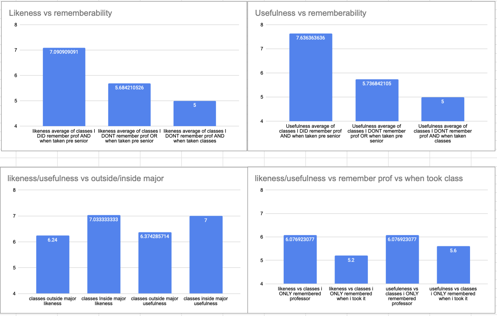

First, pretext: be clear about where you are in your academic program. Your experience is key to how the rest of the work will apply to you. Be clear about how you see yourself relating to this class (see the classifications above). I spent like 10 hours on this and my spin on this is I have done some reflection as a senior on the classes I have taken. I think the classes I have taken are pretty good with a couple modifications. I go over those modifications in my google sheets for part 2. However for part 3 I look at classes I have taken and make comparisons on my years here at whitworth.
these are all shown in this google sheets link: course evaluation
Third, Justify: develop a rationale for why this plan is interesting / meaningful / valuable. Think deeply about this, this should not just be a sentence, but an argument. Why should someone value this? What kind of work / life is this setting someone up for after graduation.
Rememberbility of above charts is based off of do I remember the professors name and what year I took the class. What I think is significant about these charts is that there is not a huge difference in likeness/usefulness from outside to inside my major. What this means is that remembering professors names and when I took the class has had a bigger impact then whether its in my major or not.
with asking the question in the data: "do you remember what year you were when you took this class" is significant and not random. I am making an argument that knowing when something happened is more significant then knowing in general that something happened. This is true according to wiki because we are drawing from a different part of memory.
So what's additionally sagnificant from the data that I gathered is that i value a connection with the professor and being able to remember when I took the class more then i value whether the class was in my major or not.
What this shows is that you should take a variety of classes to find what connections you could build with your professors.
and with this data you might be saying to yourself "hey Ava if you are partially basing likability and usefulness off memory then won't recent classes screw the data"
This chart above is what I would say to you, there is only a 0.8% difference if you combine both likeness and usefulness with usefulness being higher for lower level classes.
And if you get rid of junior level classes i took, likeness and usefuleness both increase
you now might be thinking, "how can this be?"
it is because remembering a professors name has more weight then remebering when I took a class. So in general classes that I couldn't remember a professors name in but could remember when i took it generally were less likeable and useful for classes where i could remember the professors name.
what this chart shows is that classes that were high in usefulness were generally more difficult then classes that were high in likability
However, what I think is more important is that classes as you decreased usefulness remained the same for difficulty. And the only significant change was a decrease in likability with classes that became more difficult.
So in short: I did not find more difficult classes more useful just less likable. So in general, weigh how much you might like a class more then how useful you think it will be
What is exciting to you about this plan? Well i think what is exciting is the variety. being able to find classes useful that are outside of my major is awesome because that is always a worry for me. Additionally, i think that taking computer science classes and art classes is such a good combination. I think it helped made me well rounded.
If you are going to be pursuing this: what are your highlights? The highlights were the classes where I could remember the professors name and when I took the class. which is a funny think to say because i actually quantified this question. This answer for most people is probably subjective but with data I was able to make this an objective fact based of memory usefulness and liking.
If you are not going to be pursuing this: what kept you from doing this? I did pursue most of it but what kept me from doing some of it was basketball. which is partially a good thing but basketball and I have a love hate relationship
Where do you think Whitworth should be investing academic effort to support this plan? I'm not educated that much in this space but i would invest in programs for students to attend that helped them figure out for themselves the best ways that they learn
How do you feel about this process? What are your blind-spots? Where did you run into issues? Blind spots: I am a big fan of the only thing I have ever done. And i actually see this alot in my life. I go to the first college that accepts me, I date the first guy that asks me out, I pick the major that was first suggested to me. I am very much a person who gets something started and then figurs it out as i go. which is my own issue that leads to my anxiety because if i dont hear back from the one person or one organization i tried to make a deal with then I feel like the worlds ending. Besides this I ran into issues with trying to figure out what to do with the data.